무대 이야기
둥글게 둘러앉아
서로를 바라봅니다
찬양팀과 회중의 자리를 나누지 않았어요. 서로의 얼굴을 보며 함께 부르는 예배를 위해, 무대를 원으로 놓았습니다.
무대 이야기
찬양팀과 회중의 자리를 나누지 않았어요. 서로의 얼굴을 보며 함께 부르는 예배를 위해, 무대를 원으로 놓았습니다.
팀이 함께 읽는 말씀
팀원끼리만 보는 공간이에요
단톡방에 공유된 암호를 넣어주세요.
한 번 넣으면 이 기기는 기억합니다.
모두에게 열어 둔 말씀
옆으로 넘겨보세요
이번 주 함께 읽는 말씀
말씀 보기이 무대를 함께 만드는 사람들
테두리가 빛나는 카드를 누르면 그 사람이 붙들고 있는 말씀을 볼 수 있어요
팀별로 보기
Our Story 2023 - 2026
왜 우리가 여기 모였는지의 이야기
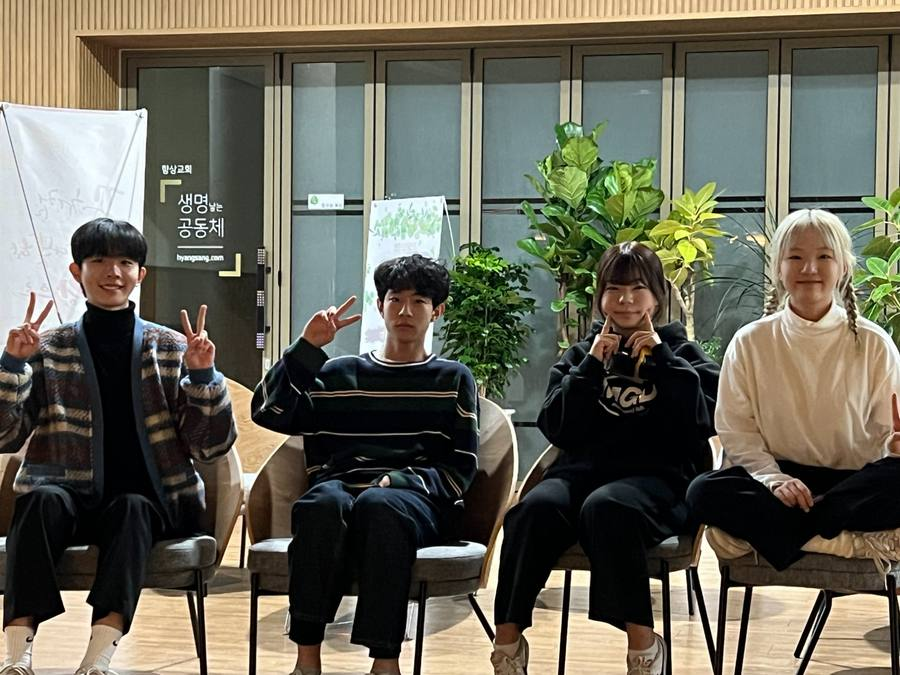
01. 준비
세상은 점점 더 빠르게 움직이고,
우리의 시선은 자연스럽게
눈에 보이는 것들로 향합니다.
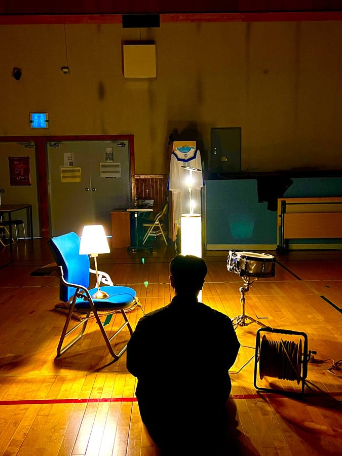
02. 고민
이렇게 바쁜 세상 속에서
우리는 하나님을
너무 쉽게 잊고 살아가고 있는 것은 아닐까.
03. 결심
그래서 우리는 시작했습니다.
조명을 직접 구하고, 악기를 날랐습니다.
아무것도 없었지만, 마음은 있었습니다.
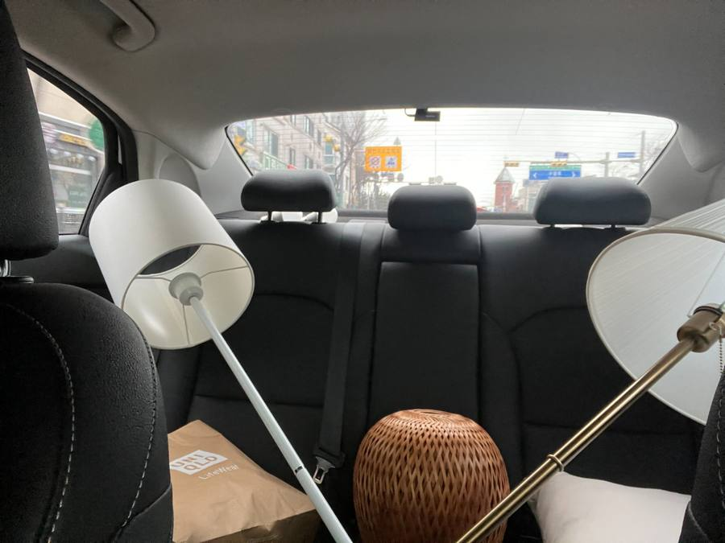
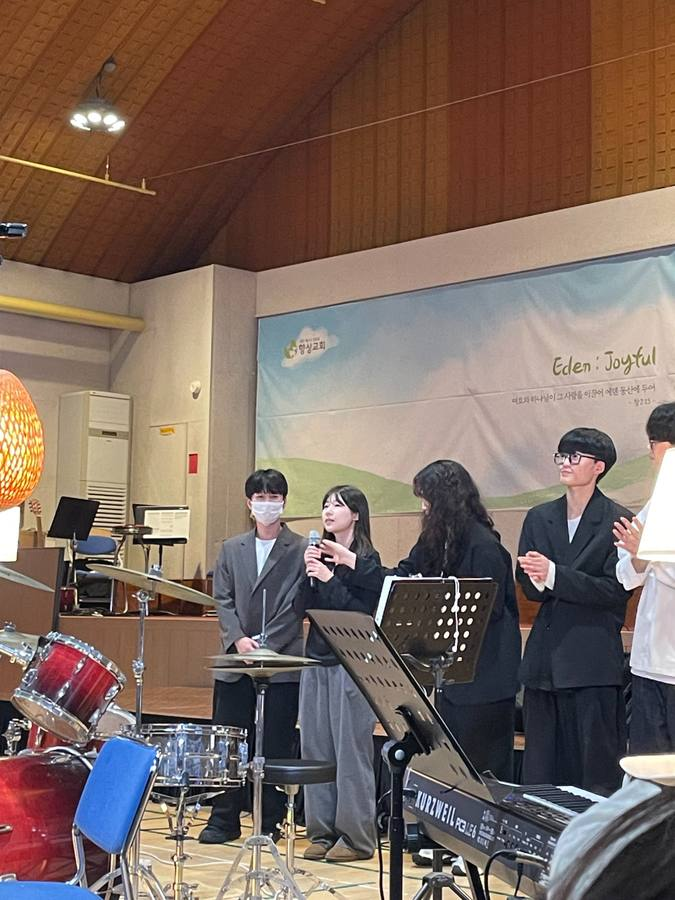
04. 작은 시작
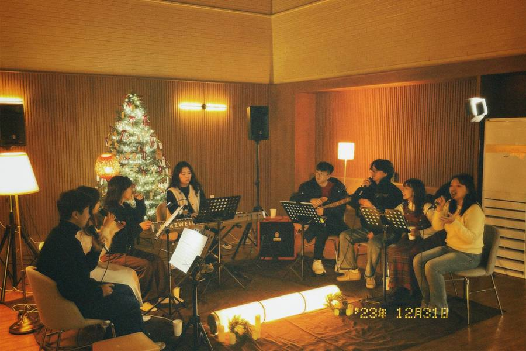
05. 찬양이 시작됨
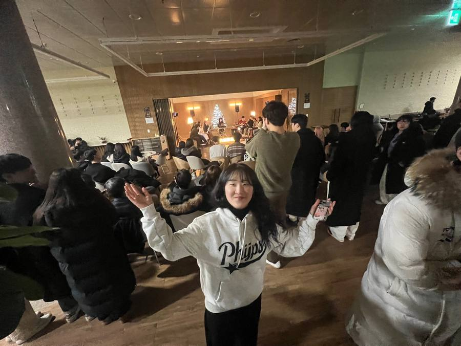
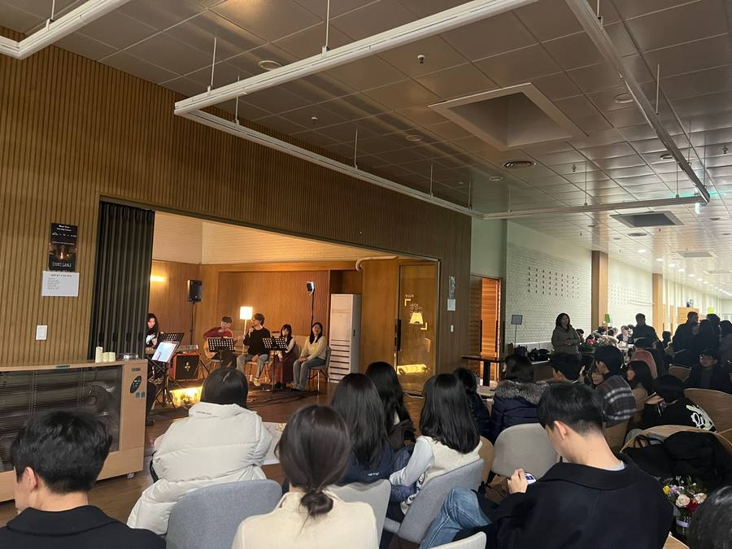
06. 함께


07. 공동체
이 작은 시작이 다시 하나님을 바라보는 시간이 되고,
찬양하는 청년들이 더 많아지는 시작이 되기를.
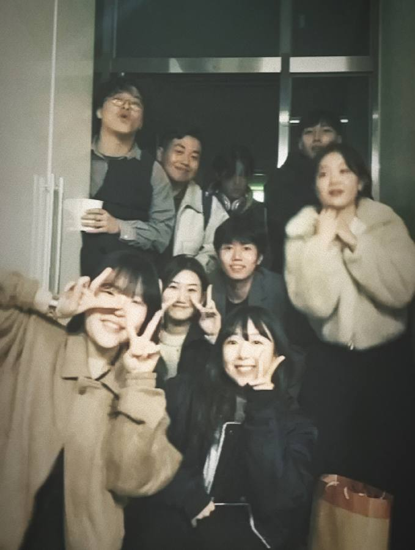
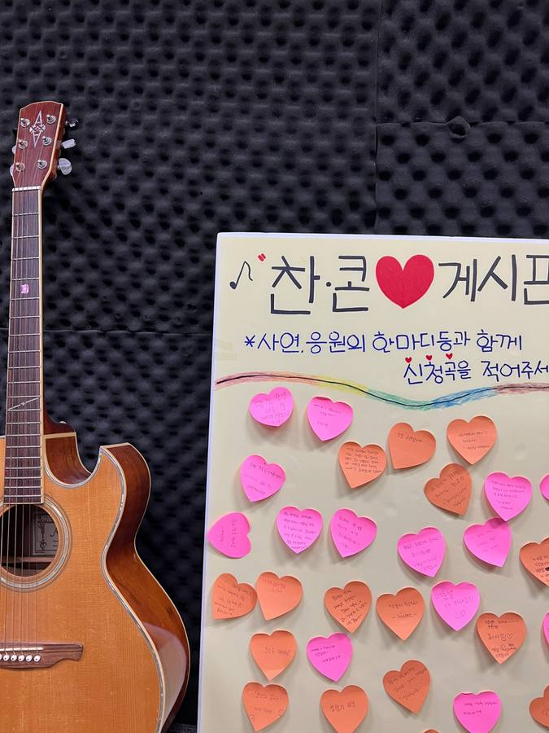
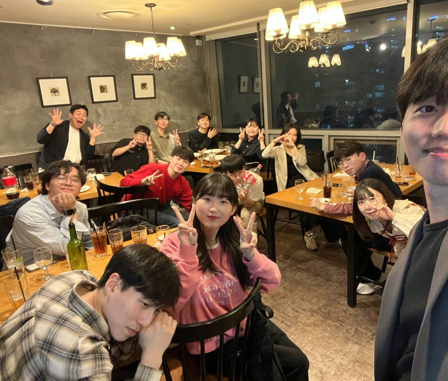
08. 더 큰 울림
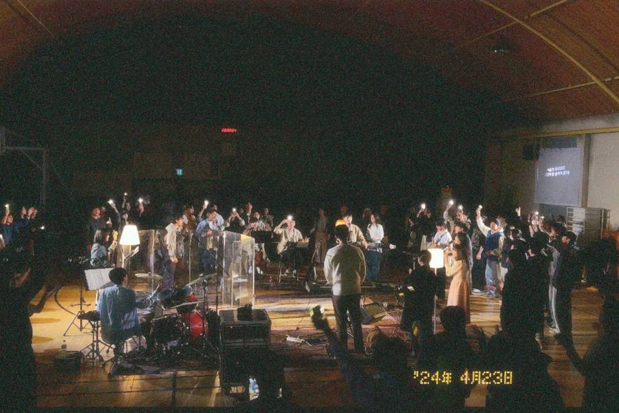
함께 지어져 가네
그의 안에서 건물마다 서로 연결하여
주 안에서 성전이 되어가고
너희도 성령 안에서
하나님의 거하실 처소가 되기 위하여
예수 안에서 함께 지어져 가느니라
에베소서 2장 21-22절
한마디
말씀
Join us
신청이 접수되었어요
12월 19일 토요일 저녁 7시 30분
향상교회 3층 체육관에서 만나요
나눠주셔서 고마워요
함께 읽고 함께 기도할게요
후원해주셔서 진심으로 감사드립니다
후원계좌
예금주 최원근
후원해주신 금액은 찬양이 좋아서 모인 청년들팀의 운영자금으로 사용됩니다.
무대 이야기
서로를 바라보며 드리는 예배
여러 교회에서 온 청년과 청소년, 어린아이들까지 한자리에 모여 함께 하나님을 찬양하는 모습을 꿈꿨습니다. 찬양팀은 노래하고 나머지는 바라보는 자리가 아니라, 모인 모든 사람이 함께 예배하는 사람이 되기를 바랐습니다.
우리 팀은 음악적으로 완벽하지 않습니다. 어린 친구들과 아마추어 연주자가 대부분입니다. 그래서 더욱 잘하는 무대를 보여 주기보다, 부족해도 함께 드리는 예배가 이 자리에 어울린다고 믿었습니다.
대부분의 찬양 집회는 앞쪽 무대를 회중이 바라보는 모습입니다. 익숙하고 좋은 방식입니다. 다만 준비하며 한 가지 질문이 마음에 남았습니다.
“함께 예배하러 모였는데, 노래하는 사람과 듣는 사람의 자리가 꼭 나뉘어야 할까?”
앞만 바라보면 옆에서 찬양하는 다른 교회 친구들과 어린 동생들의 얼굴은 잘 보이지 않습니다. 바꾸고 싶었던 것은 무대의 모양이 아니라, 우리가 함께 예배하고 있다는 사실을 서로 느낄 수 있는 자리였습니다.
말씀을 묵상할수록 되풀이되는 단어는 서로였습니다. 서로 화답하고, 서로 세우고, 서로 돌아보는 공동체입니다.
찬양팀과 악기를 원으로 놓으면 서로의 얼굴을 보며 노래할 수 있고, 둘레에 함께한 사람들도 같이 예배하는 서로를 자연스럽게 보게 됩니다.
원이라는 모양이 공동체를 만들어 주지는 않습니다. 중요한 것은 어떤 마음으로 하나님을 예배하느냐입니다. 다만 공간도 우리가 바라는 예배를 보여 주는 한 가지 방법이 될 수 있다고 생각했습니다.
우리가 만들고 싶은 것은 원형 무대가 아니라, 서로를 바라보며 함께 하나님을 예배하는 공동체입니다.
무대 3D로 둘러보기콘티 이야기
이번 주제곡은 “우리가 서로 사랑하자”입니다.
서로 사랑하자는 말이 단순한 다짐이나 그날의 고백으로만 남지 않기를 바랐습니다. 그래서 그 고백에 앞서, 하나님이 먼저 우리를 사랑하셨다는 사실을 바라보도록 콘티를 구성했습니다.
십자가와 부활로 보여 주신 사랑, 연약한 순간에도 붙들어 주시는 사랑을 기억하고, 그 사랑 안에서 다시 일어나 주님과 함께 걷고자 합니다. 우리가 서로 사랑하는 것은 우리에게 사랑할 힘이 충분해서가 아니라, 먼저 받은 사랑이 있기 때문입니다.
그 사랑으로 마음을 열고, 서로의 이야기를 듣고, 지친 사람을 돌아보는 작은 실천으로 이어졌으면 합니다. 그리고 그 사랑이 우리 안에만 머무르지 않고, 친구와 가족, 아직 주님을 모르는 한 사람에게까지 흘러가기를 소망합니다.
오늘 함께 부른 “우리가 서로 사랑하자”가 예배가 끝난 뒤에도, 함께 걷다가 넘어질 때에도, 우리 가운데 선한 일을 시작하신 주님을 의지하는 삶의 고백으로 이어지기를 바랍니다.